Pan-cancer quantification of neoantigen-mediated immunoediting in cancer evolution
Dependencies
This project is depended on R software, R packages, shell bash, Julia software and some Julia packages :
- NeoEnrichment - do neoantigen enrichment for this project.
- tidyverse - tidy data
- data.table - read and tidy data
- survival - survival analysis
- survminer - plot survival fit
- DT - show data table as a table in html
- ggstatsplot - plot scatter with linear fit
- corrplot - plot correlation
- Julia - do simulation
- knitr, rmdformats - used to compile this file
Data download and preprocessing
This part will describe how and where the data that this project used is downloaded and pre-processed.
TCGA pancancer data download and clean
This part describes how and where to download raw data and clean them for following analysis.
Mutation data
Pre-compiled curated somatic mutations (called by MuTect2) for TCGA cohorts were downloaded from Xena and only keep missense variants for following analysis
mutect2 <- data.table::fread("~/useful_data/GDC-PANCAN.mutect2_snv.tsv") %>%
dplyr::filter(effect=="missense_variant" & filter=="PASS")
saveRDS(mutect2,file = "~/Immunoediting/data/pancancer_mutation.rds")view this file:
pancancer_mutation <- readRDS("~/Immunoediting/data/pancancer_mutation.rds")
DT::datatable(head(pancancer_mutation),
options = list(scrollX = TRUE, keys = TRUE), rownames = FALSE
)We also downloaded xena non-silent mutation data from xena. This file records mutations as 1 for non_slient mutation and 0 for slient mutation.
Copy number data
Absolute copy number data was download from TCGA GDC Data Portal, then we converted the aliquot id of those files to TCGA sample barcode using aliquot.tsv (check Biosepcimen botton in the GDC Cart to download),the code used to convert id is in code/R/convert_aliquot_id.R
###merge all data
file <- dir("~/neo_dep/ssNEA/data/copy_number/")
dt <- data.frame(sample=NA,Chromosome=NA,Start=NA,End=NA,Copy_Number=NA)
dt <- dt[-1,]
for (i in file){
tmp <- readRDS(paste("~/neo_dep/ssNEA/data/copy_number/",i,sep = "")) %>%
select(sample_submitter_id,Chromosome,Start,End,Copy_Number) %>%
rename(sample=sample_submitter_id)
dt <- rbind(dt,tmp)
}
saveRDS(dt,file = "~/Immunoediting/data/pancancer_copy_number.rds")view this file:
pancancer_copy_number <- readRDS("~/Immunoediting/data/pancancer_copy_number.rds")
DT::datatable(head(pancancer_copy_number),
options = list(scrollX = TRUE, keys = TRUE), rownames = FALSE
)And we also download Gistic copynumber data from The Immune Landscape of Cancer(GISTIC2.0 all_thresholded.by_genes file)
Clinical and purity data
Clinical and tumor purity data was obtained from TCGA PanCanAtlas Publications
###Clinical
survial <- data.table::fread("~/neo_dep/afteranalysis/survial/TCGA-CDR-survial.csv")
saveRDS(survial,file = "~/Immunoediting/data/pancancer_survial.rds")
###purity
purity <- data.table::fread(
file = "~/neo_dep/envolution/TCGA_mastercalls.abs_tables_JSedit.fixed.txt")
saveRDS(purity,file = "~/Immunoediting/data/pancaner_purity.rds")Clean the clinical data.
pancancer_survial <- readRDS("~/Immunoediting/data/pancancer_survial.rds") %>%
rename(
sample = bcr_patient_barcode,
age = age_at_initial_pathologic_diagnosis
) %>%
mutate(gender = case_when(
gender == "FEMALE" ~ "Female",
gender == "MALE" ~ "Male",
TRUE ~ NA_character_
), Tumor_stage = case_when(
ajcc_pathologic_tumor_stage == "Stage 0" ~ "0",
ajcc_pathologic_tumor_stage %in% c("Stage I", "Stage IA", "Stage IB") ~ "I",
ajcc_pathologic_tumor_stage %in% c("Stage II", "Stage IIA", "Stage IIB", "Stage IIC") ~ "II",
ajcc_pathologic_tumor_stage %in% c("Stage IIIA", "Stage IIIB", "Stage IIIC") ~ "III",
ajcc_pathologic_tumor_stage %in% c("Stage IV", "Stage IVA", "Stage IVB", "Stage IVC") ~ "IV",
ajcc_pathologic_tumor_stage == "Stage X" ~ "X",
TRUE ~ NA_character_
)) %>%
select(sample,age,gender,Tumor_stage,OS,OS.time)
saveRDS(pancancer_survial,file = "~/Immunoediting/data/pancancer_survial.rds")View the clinical data:
HLA typing data
HLA typing data was obtained from The immune landscape of cancer For samples which do not have mutation data in HLA typing data set (1168 samples) or samples which do not have HLA typing data in mutation data set (2404 samples), we download raw bam files from TCGA to call mutatioins and type HLA genotypes.
Immune infiltration data
Immune infiltration estimation data for all TCGA tumors was downloaded from TIMER2.0 and we used CIBERSORT data, which has 22 immune cell types. In addition, the Leukocyte Fraction (LF) data reported in Vesteinn Thorsson et.al was downloaded from The immune landscape of cancer.
###Immune infiltration estimation
immune <- data.table::fread("~/useful_data/infiltration_estimation_for_tcga.csv") %>%
rename(sample=cell_type) %>%
select(sample,ends_with("CIBERSORT")) %>%
filter(substr(sample,14,15) != "11") %>% ## checked the 14-15 of sample names
mutate(
Macrophage=`Monocyte_CIBERSORT`+`Macrophage M0_CIBERSORT`+`Macrophage M1_CIBERSORT`,
Dendritic_cell=`Myeloid dendritic cell resting_CIBERSORT`+`Myeloid dendritic cell activated_CIBERSORT`,
Mast_cell=`Mast cell activated_CIBERSORT`+`Mast cell resting_CIBERSORT`,
Neutrophils=`Eosinophil_CIBERSORT`,
Eosinophils=`Neutrophil_CIBERSORT`,
T_cells_CD8=`T cell CD8+_CIBERSORT`,
T_cells_CD4=`T cell CD4+ memory resting_CIBERSORT`+`T cell CD4+ memory activated_CIBERSORT`+
`T cell CD4+ naive_CIBERSORT`,
B_cells=`B cell naive_CIBERSORT`+`B cell memory_CIBERSORT`,
NK_cells=`NK cell resting_CIBERSORT`+`NK cell activated_CIBERSORT`,
Supress_cell=`Macrophage M2_CIBERSORT`+`T cell regulatory (Tregs)_CIBERSORT`
) %>% select(1,24:33)
saveRDS(immune,file = "~/Immunoediting/data/immue_estimate.rds")
###LF
lf <- data.table::fread("~/useful_data/immune_landscape.csv") %>%
select(1:32)
saveRDS(lf,file = "~/Immunoediting/data/immune_landscape.rds")view those files:
immue_estimate <- readRDS("~/Immunoediting/data/immue_estimate.rds")
DT::datatable(head(immue_estimate),
options = list(scrollX = TRUE, keys = TRUE), rownames = FALSE
)immune_landscape <- readRDS("~/Immunoediting/data/immune_landscape.rds")
DT::datatable(head(immune_landscape),
options = list(scrollX = TRUE, keys = TRUE), rownames = FALSE
)In addition, we also obtain the data from Wang S et.al, 2019 elife, and use APM score , Aggregate TIS (T cell infiltration score) and IIS (Immune cell infiltration score).
load("~/Immunoediting/data/df_combine_gsva_clinical.rdata")
df.gsva <- df.gsva %>%
select(Project,Tumor_Sample_Barcode,APM,TIS,IIS)
saveRDS(df.gsva,file = "~/Immunoediting/data/wang_2019_elife.rds")view the data:
RNA-seq data
The normalized gene-level RNA-seq data (TPM,Transcripts Per Million) for 33 TCGA cohorts were downloaded from Xena.We chose GDC TCGA cohort and HTSeq - FPKM data, then we transfrom FPKM to TPM.(Those file is too large, so I don’t push it to github)
fpkmToTpm <- function(fpkm)
{
exp(log(fpkm) - log(sum(fpkm)) + log(1e6))
}
fpkm2tpm <- function(cancertype){
##read fpkm data
f2 = paste("~/neo_dep/RNA-seq/TCGA_pancancer/",cancertype,"/",cancertype,".htseq_fpkm.tsv",sep = "")
cancer_exp <- data.table::fread(
file = f2,
stringsAsFactors = FALSE,
verbose = FALSE,
data.table = TRUE,
showProgress = TRUE,
header = T,
quote = ""
)
##tranform fpkm to tpm
#the data in the matrix is log2(fpkm+1)
cancer_exp[,2:ncol(cancer_exp)] <- 2^(cancer_exp[,2:ncol(cancer_exp)])-1
cancer_exp <- as.data.frame(cancer_exp)
cancer_exp[,2:ncol(cancer_exp)] <- apply(cancer_exp[,2:ncol(cancer_exp)],2,fpkmToTpm)
##remove normal samples
##for get normal samples expression, see code/R/get_expmatrix_normal.R
i = which(substr(colnames(cancer_exp),14,15)%in%c("01","02","03","04","05",
"06","07","08","09","10"))
cancer_exp = cancer_exp %>% select(c(1,i))
## add gene symbol
map = data.table::fread(
file = "~/neo_dep/RNA-seq/TCGA_pancancer/acc/gencode.v22.annotation.gene.probeMap",
stringsAsFactors = FALSE,
verbose = FALSE,
data.table = TRUE,
showProgress = TRUE,
header = T,
quote = ""
)
cancer_exp <- left_join(cancer_exp,map %>% select(id,gene),by=c("Ensembl_ID"="id")) %>%
select(Ensembl_ID,gene,everything())
save(cancer_exp,file = paste("~/neo_dep/RNA-seq/TCGA_pancancer/exp_matrix_tpm/",cancertype,"_exp.Rdata",sep = ""))
}
cancer <- read.table("~/neo_dep/RNA-seq/TCGA_pancancer/cancer")
for (i in cancer$V1){
fpkm2tpm(i)
}Based on RNA-seq data, we can also calculate CYT values. Cytolytic activity (CYT) was calculated as the geometric mean of GZMA and PRF1 (as expressed in TPM, 0.01 offset)(Michael S. Rooney et.al, 2015 Cell)
The code used to calculate CYT can be found in code/R/cal_CYT
TCGA pancancer data pre-process
This part describes
Calculate ccf and add expression
In this project, we quantified Neoantigen Enrichment in the aspect of ccf and expression of neoantigen. So, we need calculate ccf and add expression information for each mutation.
The proportion of cancer cells carrying a particular mutation (cancer cell fraction, CCF) was calculated from the VAF of the mutation, sample purity (tumour content), and copy number (CN) of the mutation’s genomic locus as follows: \[ CCF = \frac{VAF*CN}{purity} \] CCF values above 1 (arising from sequencing noise and copy-neutral loss-of-heterozygosity events) were assumed to be 1.
###load data
pancancer_copy_number <- readRDS("~/Immunoediting/data/pancancer_copy_number.rds")
pancaner_purity <- readRDS("~/Immunoediting/data/pancaner_purity.rds")
pancancer_copy_number <- left_join(pancancer_copy_number,
pancaner_purity %>%
mutate(sample=substr(sample,1,16)) %>%
select(sample,purity),
by="sample")
###add copy number to mutation data
pancancer_mutation <- readRDS("~/Immunoediting/data/pancancer_mutation.rds")
dt <- pancancer_mutation %>%
filter(effect=="missense_variant" & filter=="PASS") %>%
mutate(chr_sample=paste(chrom,Sample_ID,sep = ","),
pos=start)%>%
select(chr_sample,pos,gene,dna_vaf) %>% rename(x=chr_sample)
copynumber_dt <- pancancer_copy_number %>%
mutate(chr_sample=paste(Chromosome,sample,sep = ","))%>%
select(chr_sample,Start,End,Copy_Number,purity) %>% rename(x=chr_sample)
dt <- setDT(dt)
copynumber_dt <- setDT(copynumber_dt)
overlap <- dt[copynumber_dt, .(x, pos=x.pos,Start,End,Copy_Number,purity,gene,dna_vaf),
on=.(x, pos>=Start, pos<=End), nomatch=F,allow.cartesian=TRUE]
overlap <- overlap[,index:=paste(x,pos,sep = ",")]
overlap <- overlap %>%
mutate(ccf=dna_vaf*Copy_Number/purity) %>%
mutate(ccf_cn_assume=ifelse(ccf>1,1,ccf)) %>%
separate(col = x,into = c("chromosome","sample"),sep = ",")
overlap$cancer_type <- NeoEnrichment::getcancer_type(overlap$sample,cores = 12,par = TRUE)Add RNA expression to each mutation:
cancer_type <- names(table(overlap$cancer_type))
with_tpm <- vector("list",33)
names(with_tpm) <- cancer_type
for(i in seq_along(with_tpm)){
load(paste("~/neo_dep/RNA-seq/TCGA_pancancer/exp_matrix_tpm/",
tolower(gsub("TCGA-","",names(with_tpm)[i])),"_exp.Rdata",sep = ""))
a <- overlap %>% filter(cancer_type==names(with_tpm)[i])
with_tpm[[i]] <- dplyr::left_join(
a %>% mutate(sample=substr(sample, 1, 15)),
cancer_exp %>%
tidyr::pivot_longer(cols = dplyr::starts_with("TCGA"), names_to = "sample", values_to = "exp") %>%
dplyr::mutate(sample = substr(sample, 1, 15)),
by = c("sample", "gene")
)
}
overlap_add_tpm <- bind_rows(with_tpm)
###remove dupliated gene
overlap_add_tpm <- overlap_add_tpm[!duplicated(overlap_add_tpm$index),]
saveRDS(overlap_add_tpm,file = "~/Immunoediting/data/pancancer_ccf_exp.rds")Calculate Neoantigen Enrichment score
We use pvactools to predict mutated peptides binding affinity, see methods for more details.
Firstly, we need add the results of neoantigen prediction (aggregated IC50) to mutation data.
###add IC50
pancancer_ccf_exp <- readRDS("~/Immunoediting/data/pancancer_ccf_exp.rds")
neoantigen <- readRDS("~/neo_dep/ssNEA/data/update_data.rds")
neoantigen <- neoantigen %>%
mutate(index=paste(chr,Tumor_Barcode,Stop,sep = ","))
mut_with_IC50 <- left_join(neoantigen,
pancancer_ccf_exp %>%
select(index,ccf_cn_assume,cancer_type,exp),
by="index")
saveRDS(mut_with_IC50,file = "~/Immunoediting/data/pancancer_neoantigen_exp_ccf.rds")Then we can calculate the Enrichment score for ccf and expression of neoantigens based on package NeoEnrichment (This package is developed for this project and can be installed by devtools::install_github("wt12318/NeoEnrichment")). The detail of method, please check the package document or our paper.
pancancer_neoantigen_exp_ccf <- readRDS("~/Immunoediting/data/pancancer_neoantigen_exp_ccf.rds")
pancancer_neoantigen_exp_ccf <- pancancer_neoantigen_exp_ccf %>%
rename(sample=Tumor_Barcode,chromosome=chr,position=Stop,MT_mean=MT_har_mean) %>%
as.data.frame(stringsAsFactors=FALSE)
###ccf
results_ccf <- vector("list",length = length(unique(pancancer_neoantigen_exp_ccf$sample)))
names(results_ccf) <- unique(pancancer_neoantigen_exp_ccf$sample)
cl <- makeCluster(getOption("cl.cores", 12),type="FORK")
set.seed(202011105)
results_ccf <- parSapply(cl=cl,names(results_ccf),
function(x){
NeoEnrichment::cales_t(pancancer_neoantigen_exp_ccf,x,
calp=TRUE,cal_type="ccf",mhc_type="I")
})
stopCluster(cl)
results_ccf <- Filter(function(x){length(x)>1},results_ccf)
pancancer_nes_ccf <- bind_rows(results_ccf,.id = "sample")
saveRDS(pancancer_nes_ccf,file = "~/Immunoediting/data/pancancer_nes_ccf.rds")
###exp
results_exp <- vector("list",length = length(unique(pancancer_neoantigen_exp_ccf$sample)))
names(results_exp) <- unique(pancancer_neoantigen_exp_ccf$sample)
cl <- makeCluster(getOption("cl.cores", 10),type="FORK")
set.seed(202011106)
results_exp <- parSapply(cl=cl,names(results_exp),
function(x){
NeoEnrichment::cales_t(pancancer_neoantigen_exp_ccf,x,
calp=TRUE,cal_type="exp",mhc_type="I")
})
stopCluster(cl)
results_exp <- Filter(function(x){length(x)>1},results_exp)
pancancer_nes_exp <- bind_rows(results_exp,.id = "sample")
saveRDS(pancancer_nes_exp,file = "~/Immunoediting/data/pancancer_nes_exp.rds")View the results:
Process immune escape sample
We consider following immune escape mechanisms:
- Suppress the transcription/expression of genome alterations encoding high antigenicity (quantified by NES(EXP))
- Antigen presentation pathway gene mutation
- Up-regulate the expression of immune suppressive signaling, like PD-L1, CTLA-4
As for antigen presentation pathway gene, we use KEGG Antigen processing and presentation pathway: hsa04612:
library("KEGGREST")
gs<-keggGet('hsa04612')
gene <- str_extract(gs[[1]]$GENE,".+; ") %>% na.omit()
gene <- gsub("; ","",gene)
another_apm <- c("CIITA","IRF1","PSME1","PSME2","PSME3","ERAP1","ERAP2","PSMA7",
"HSPBP1","TAP1","TAP2","TAPBP","CALR","CANX","PDIA3","B2M","PSMB5","PSMB6","PSMB7",
"PSMB8","PSMB9","PSMB10")
apm_gene <- union(gene,another_apm)
saveRDS(apm_gene,file = "~/Immunoediting/data/apm_gene.rds")
pancancer_exp <- readRDS("~/Immunoediting/data/pancancer_nes_exp.rds")
pancancer_exp$adj_p <- p.adjust(pancancer_exp$p_value,method = "fdr")
pancancer_exp <- pancancer_exp %>%
mutate(exp_escape=ifelse(nes<0 & adj_p<0.25,"yes","no"))
#exp_escape_sample <- pancancer_exp[pancancer_exp$exp_escape=="yes","sample"] %>% substr(.,1,15)
###apm mutate sample
apm_gene <- readRDS("~/Immunoediting/data/apm_gene.rds")
##non-slient mutation
mut <- data.table::fread("~/PD_L1_ubiquitination/data/mc3.v0.2.8.PUBLIC.nonsilentGene.xena")
mut <- mut %>%
filter(sample %in% apm_gene) %>%
select(any_of(substr(pancancer_exp$sample,1,15)))
pancancer_exp$apm_mut <- ifelse(substr(pancancer_exp$sample,1,15) %in% colnames(mut),1,NA)
apm_mutation_sample <- apply(mut[,1:ncol(mut)],2,sum)
apm_mutation_sample <- names(apm_mutation_sample[apm_mutation_sample>=1])
pancancer_exp$apm_mut <- ifelse(is.na(pancancer_exp$apm_mut),NA,
ifelse(substr(pancancer_exp$sample,1,15) %in% apm_mutation_sample,"yes","no"))
saveRDS(pancancer_exp,file = "~/Immunoediting/data/pancancer_nes_exp.rds")Immune checkpoint overexpression was assessed using RNA-seq data. Normal expression values (in transcripts per million mapped reads (TPM)) of PD-L1 and CTLA-4 were established for each cohort from the TCGA based on RNA-seq counts of the two proteins in solid tissue normal samples. Checkpoint overexpression was called if either PD-L1 or CTLA-4 expression in the tumor was higher than the mean plus two s.d. of normal expression :
###normal
cancer <- read.table("~/neo_dep/RNA-seq/TCGA_pancancer/cancer")
cancer <- cancer %>%
mutate(mean_pdl1=NA,
mean_ctla4=NA,
sd_pdl1=NA,
sd_ctla4=NA) %>% rename(caner=V1)
file <- dir("~/neo_dep/RNA-seq/TCGA_pancancer/exp_tpm_mat_normal/")
for(i in file){
a <- readRDS(paste("~/neo_dep/RNA-seq/TCGA_pancancer/exp_tpm_mat_normal/",i,sep = ""))
a <- a %>% filter(gene %in% c("CD274","CTLA4"))
b <- gsub("_exp.rds","",i)
cancer[cancer$caner==b,"mean_pdl1"] <- mean(as.numeric(a[a$gene=="CD274",3:ncol(a)]))
cancer[cancer$caner==b,"mean_ctla4"] <- mean(as.numeric(a[a$gene=="CTLA4",3:ncol(a)]))
cancer[cancer$caner==b,"sd_pdl1"] <- sd(as.numeric(a[a$gene=="CD274",3:ncol(a)]))
cancer[cancer$caner==b,"sd_ctla4"] <- sd(as.numeric(a[a$gene=="CTLA4",3:ncol(a)]))
}
saveRDS(cancer,file = "~/Immunoediting/data/normal_checkpoint.rds")
###cancer
a <- data.frame(CTLA4=NA,CD274=NA,sample=NA)
for (i in cancer$V1) {
load(paste("~/neo_dep/RNA-seq/TCGA_pancancer/exp_matrix_tpm/",i,"_exp.Rdata",sep = ""))
cancer_exp <- cancer_exp %>% filter(gene%in%c("CD274","CTLA4")) %>% select(-1)
rownames(cancer_exp) <- cancer_exp$gene
cancer_exp <- cancer_exp[,-1]
cancer_exp <- as.data.frame(t(cancer_exp),stringsAsFactors = F)
cancer_exp$sample <- rownames(cancer_exp)
a <- rbind(a,cancer_exp)
}
a <- na.omit(a)
a$sample <- substr(a$sample,1,15)
a <- a[!duplicated(a$sample),]
saveRDS(a,file = "~/Immunoediting/data/cancer_checkpoint.rds")
###find overexpression
cancer_checkpoint_exp <- readRDS("~/Immunoediting/data/cancer_checkpoint.rds")
normal_checkpoint_exp <- readRDS("~/Immunoediting/data/normal_checkpoint.rds")
cancer_checkpoint_exp$cancer <- tolower(gsub("TCGA-","",getcancer_type(cancer_checkpoint_exp$sample)))
sample_checkpoint_exp <- left_join(cancer_checkpoint_exp,normal_checkpoint_exp,
by=c("cancer"="caner"))
sample_checkpoint_exp <- sample_checkpoint_exp %>%
filter(!(is.na(mean_pdl1) & is.na(sd_pdl1)))
sample_checkpoint_exp <- sample_checkpoint_exp %>%
dplyr::mutate(CTLA4_overexpression=mapply(function(x,y,z){
if(is.na(z)){
return(ifelse(x>3*y,"yes","no"))
}else{
return(ifelse(x>(y+2*z),"yes","no"))
}
},CTLA4,mean_ctla4,sd_ctla4),
PDL1_overexpression=mapply(function(x,y,z){
if(is.na(z)){
return(ifelse(x>3*y,"yes","no"))
}else{
return(ifelse(x>(y+2*z),"yes","no"))
}
},CD274,mean_pdl1,sd_pdl1))
sample_checkpoint_exp <- sample_checkpoint_exp %>%
select(sample,CTLA4_overexpression,PDL1_overexpression)
saveRDS(sample_checkpoint_exp,"~/Immunoediting/data/checkpoint_overexpression_sample.rds")Then we can find escape samples:
checkpoint_overexpression_sample <- readRDS("~/Immunoediting/data/checkpoint_overexpression_sample.rds")
checkpoint_escape_sample <- checkpoint_overexpression_sample[checkpoint_overexpression_sample$CTLA4_overexpression=="yes" | checkpoint_overexpression_sample$PDL1_overexpression=="yes","sample"]
pancancer_exp$checkpoint_overexpression <- ifelse(substr(pancancer_exp$sample,1,15) %in% checkpoint_overexpression_sample$sample,1,NA)
pancancer_exp$checkpoint_overexpression <- ifelse(is.na(pancancer_exp$checkpoint_overexpression),NA,
ifelse(substr(pancancer_exp$sample,1,15) %in% checkpoint_escape_sample,"yes","no"))
saveRDS(pancancer_exp,file = "~/Immunoediting/data/pancancer_nes_exp.rds")Immunotherapy data download and clean
Immunotherapy data pre-process
TCGA pancancer analysis
The existence of significant immunoediting signal
From our pan-cancer data, we can get two distributions: mutation counts of samples and IC50 values of neoantigens. We randomly selected 10000 counts from the distribution of mutation counts to construct simulated samples which each sample has its own mutation counts. For each mutations in a simulated sample, we randomly selected a IC50 value from IC50 distribution. Now we have 10000 samples, each sample has its mutation counts and each mutations has its IC50 values. Given that CCF or expression is a criterion for ranking, we just used the natural order to rank the simulated mutations. At last, we calculated NES for these simulated samples to get neutral distribution of NES.
The following code do this simulation step for each cancer type:
pancancer_neoantigen_exp_ccf <- readRDS("~/Immunoediting/data/pancancer_neoantigen_exp_ccf.rds")
pancancer_neoantigen_exp_ccf <- pancancer_neoantigen_exp_ccf %>%
rename(sample=Tumor_Barcode,chromosome=chr,position=Stop,MT_mean=MT_har_mean) %>%
as.data.frame(stringsAsFactors=FALSE)
cancer_type <- names(table(pancancer_neoantigen_exp_ccf$cancer_type))
set.seed(202011104)
for (i in 1:length(cancer_type)){
cancer <- pancancer_neoantigen_exp_ccf %>%
dplyr::filter(cancer_type==.env$cancer_type[i])
cancer %>% group_by(sample) %>%
summarise(mutation_counts=n()) -> mutation_counts
##sampling mutation counts
sample_mt <- sample(mutation_counts$mutation_counts,10000,replace = T)
sample <- vector("list",length = 10000)
names(sample) <- c(1:10000)
sample <- lapply(sample_mt,
function(x){
tmp <- data.frame(mutation_id=c(1:x),
IC50=sample(cancer$MT_mean,x),##sample IC50 for mutations
rank=c(x:1))
a <- nrow(tmp)
tmp <- tmp %>%
mutate(rank=abs((a/2)-rank)+1)
return(tmp)
})
result <- vector("list",length = 10000)
names(result) <- c(1:10000)
cl <- makeCluster(getOption("cl.cores", 12),type="FORK")
result <- parLapply(cl=cl,sample,
function(x){
neoantigen_list <- x %>%
filter(IC50<500) %>%
select(mutation_id)
neoantigen_list <- neoantigen_list[[1]]
if(length(neoantigen_list)==0){
return(NA)
}else{
es <- NeoEnrichment::cales_simulation(x,neoantigen_list)
nes <- NeoEnrichment::cal_nes_simulation(es,neoantigen_list,x)
return(nes)
}
})
stopCluster(cl)
result <- Filter(function(x){length(x)>1},result)
result_sim <- bind_rows(result)
saveRDS(result_sim,
file = paste0("~/Immunoediting/data/simulation/",cancer_type[i],"_simulation.rds"))
}Then we bind all cancer type simulation data:
bind_all <- lapply(list.files("~/Immunoediting/data/simulation/"),
function(x){
re <- readRDS(paste0("~/Immunoediting/data/simulation/",x)) %>%
mutate(cancer=gsub("_simulation.rds","",x))
})
pancancer_simulation_data <- bind_rows(bind_all)
saveRDS(pancancer_simulation_data,file = "~/Immunoediting/data/simulation/pancancer_simulation.rds")This simulation can considered as neutral (or random) nes distribution, so we can compare our TCGA pancancer real nes distribution to this data. If the two distributions are significantly different, then we can conclude that the observed nes in TCGA real data is not random.
pancancer_simulation <- readRDS("~/Immunoediting/data/simulation/pancancer_simulation.rds")
pancancer_nes_exp <- readRDS("~/Immunoediting/data/pancancer_nes_exp.rds")
pancancer_nes_ccf <- readRDS("~/Immunoediting/data/pancancer_nes_ccf.rds")
dt_ccf <- data.frame(type=c(rep("simulation",nrow(pancancer_simulation)),
rep("TCGA pancancer",nrow(pancancer_nes_ccf))),
NES=c(pancancer_simulation$nes,pancancer_nes_ccf$nes))
dt_exp <- data.frame(type=c(rep("simulation",nrow(pancancer_simulation)),
rep("TCGA pancancer",nrow(pancancer_nes_exp))),
NES=c(pancancer_simulation$nes,pancancer_nes_exp$nes))
p1 <- ggplot(dt_ccf, aes(x=type, y=NES, fill=type)) +
scale_fill_manual(values=c("white", "#FC8D62"))+
stat_compare_means(aes(x=type, y=NES))+
geom_violin(width=0.8, alpha=0.2)+
geom_boxplot(width=0.2) +
theme(axis.title.x=element_blank())+
guides(fill=F)+
labs(title="CCF")
p2 <- ggplot(dt_exp, aes(x=type, y=NES, fill=type)) +
scale_fill_manual(values=c("white", "#FC8D62"))+
stat_compare_means(aes(x=type, y=NES))+
geom_violin(width=0.8, alpha=0.2)+
geom_boxplot(width=0.2) +
theme(axis.title.x=element_blank())+
guides(fill=F)+
labs(title="EXP")
plot_grid(p1,p2)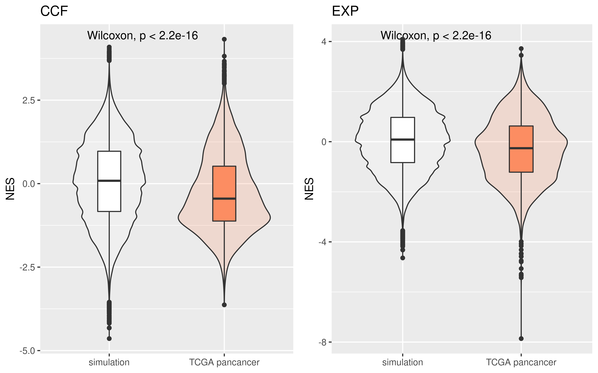
From the pancancer overview, It has significant difference between neutral simulation and TCGA real data.
Then we can check how many patients have significant neoantigen negative enrichment signal.
###firstly, we adjust p value to FDR q values:
pancancer_nes_ccf$fdr <- p.adjust(pancancer_nes_ccf$p_value,method = "fdr")
pancancer_nes_exp$fdr <- p.adjust(pancancer_nes_exp$p_value,method = "fdr")
p1 <- plot_pie(pancancer_nes_ccf$fdr,expression = "pancancer_nes_ccf$fdr<0.25 & pancancer_nes_ccf$nes<0",label = c("samples with FDR<25% \n and NES(CCF) < 0","others"))###FDR 5%
p3 <- plot_pie(pancancer_nes_ccf$fdr,expression = "pancancer_nes_ccf$fdr<0.05 & pancancer_nes_ccf$nes<0",label = c("samples with FDR<5% \n and NES(CCF) < 0","others"))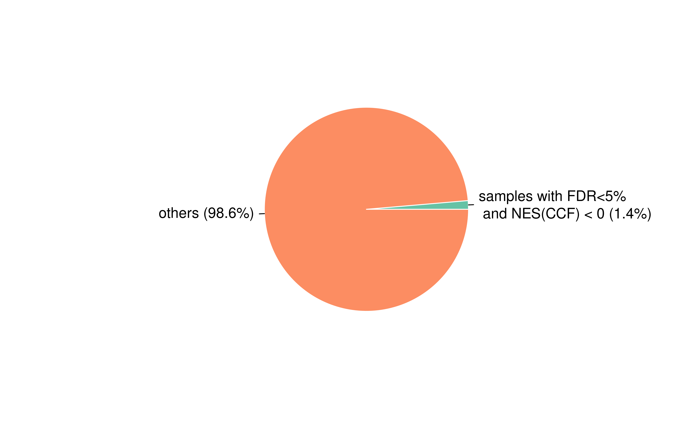
Thus we conclude that the immunoediting signal is undoubtedly exist, however in majority of cancer patient, this signal is undetectable, and only 2.5% (CCF FDR<0.25) of patient show this significant immunoediting signal.
Then we view the cancer type distribution of NES and compare with cancer type simulation:
pancancer_simulation <- readRDS("~/Immunoediting/data/simulation/pancancer_simulation.rds")
pancancer_nes_exp <- readRDS("~/Immunoediting/data/pancancer_nes_exp.rds")
pancancer_nes_ccf <- readRDS("~/Immunoediting/data/pancancer_nes_ccf.rds")
##load function
source("~/Immunoediting/code/R/plot_pancancer_nes_distribution.R")
pancancer_simulation$cancer <- gsub("TCGA-","",pancancer_simulation$cancer)
pancancer_nes_ccf$cancer <- gsub("TCGA-","",getcancer_type(pancancer_nes_ccf$sample))
pancancer_nes_exp$cancer <- gsub("TCGA-","",getcancer_type(pancancer_nes_exp$sample))
plot_pancancer(pancancer_nes_ccf,pancancer_simulation,text_position = 4,size=3)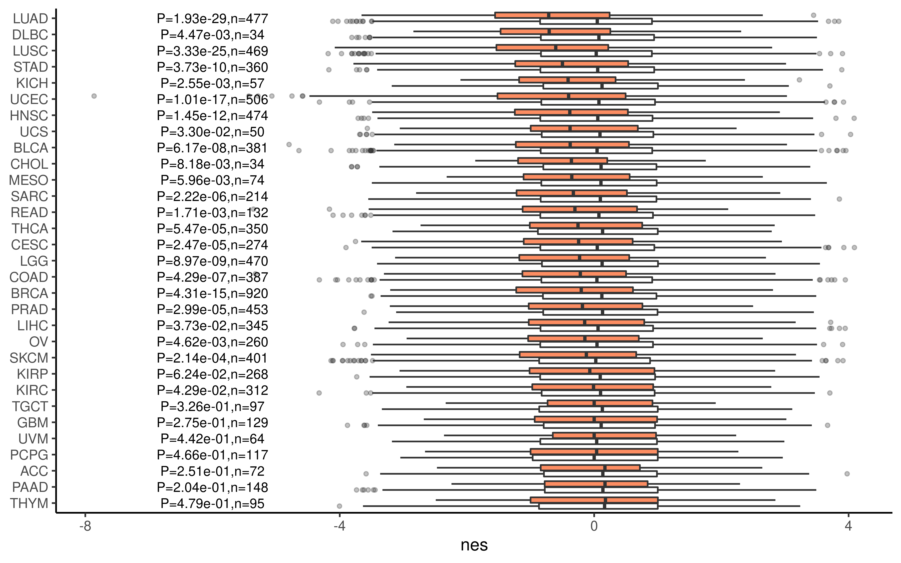
Neoantigen enrichment score is associated with immune cell infiltration
NES reflects neoantigen-mediated immune selection, thus we want to check relation between the immune cell infiltration level and our NES score.
pancancer_nes_ccf <- readRDS("~/Immunoediting/data/pancancer_nes_ccf.rds")
pancancer_nes_exp <- readRDS("~/Immunoediting/data/pancancer_nes_exp.rds")
###load all immune data
cibersort_immune <- readRDS("~/Immunoediting/data/immue_estimate.rds")
lf <- readRDS("~/Immunoediting/data/immune_landscape.rds") %>%
select(`TCGA Participant Barcode`,`Leukocyte Fraction`,
`Stromal Fraction`,`Intratumor Heterogeneity`) %>%
rename(sample=`TCGA Participant Barcode`)
elife <- readRDS("~/Immunoediting/data/wang_2019_elife.rds")
cyt <- readRDS("~/Immunoediting/data/pancancer_cyt.rds")Firstly, we calculate correlation using spearman method by cancer types
##bind all data
all_immune <- left_join(elife %>%
rename(sample=Tumor_Sample_Barcode),
cibersort_immune,
by="sample") %>%
left_join(.,cyt %>%
mutate(sample=substr(sample,1,15)),
by="sample") %>%
mutate(sample=substr(sample,1,12)) %>%
left_join(.,lf,by="sample") %>%
distinct(sample,.keep_all = T)
pancancer_nes_ccf <- left_join(pancancer_nes_ccf %>%
mutate(sample=substr(sample,1,12)),
all_immune,by="sample")
pancancer_nes_ccf$cancer <- getcancer_type(pancancer_nes_ccf$sample)
pancancer_nes_ccf <- pancancer_nes_ccf %>%
select(-c(sample, es, p_value, Project)) %>%
filter(!is.na(nes)) %>%
select(cancer, nes, everything())
pancancer_nes_exp <- left_join(pancancer_nes_exp %>%
mutate(sample=substr(sample,1,12)),
all_immune,by="sample")
pancancer_nes_exp$cancer <- getcancer_type(pancancer_nes_exp$sample)
pancancer_nes_exp <- pancancer_nes_exp %>%
select(-c(sample, es, p_value, Project)) %>%
filter(!is.na(nes)) %>%
select(cancer, nes, everything())
summ_ccf <- pancancer_nes_ccf %>%
group_by(cancer) %>%
summarise(across(nes:`Intratumor Heterogeneity`,~median(.x, na.rm = TRUE)))
summ_exp <- pancancer_nes_exp %>%
select(-c(3:6)) %>%
group_by(cancer) %>%
summarise(across(nes:`Intratumor Heterogeneity`,~median(.x, na.rm = TRUE)))
cor_mat1 <- cor(summ_ccf %>% select(-cancer),
method = "spearman", use = "pairwise.complete.obs")
cor_mat1 <- cor_mat1[,1] %>% as.data.frame()
colnames(cor_mat1) <- "NES(CCF)"
cor_mat2 <- cor(summ_exp %>% select(-cancer),
method = "spearman", use = "pairwise.complete.obs")
cor_mat2 <- cor_mat2[,1] %>% as.data.frame()
colnames(cor_mat2) <- "NES(EXP)"
ccf_exp_cor <- bind_cols(cor_mat1,cor_mat2)
ccf_exp_cor <- ccf_exp_cor[-1,]
saveRDS(ccf_exp_cor,file = "~/Immunoediting/data/ccf_exp_immune_cor.rds")ccf_exp_cor <- readRDS("~/Immunoediting/data/ccf_exp_immune_cor.rds")
ggcorrplot::ggcorrplot(t(ccf_exp_cor))##view data
DT::datatable(ccf_exp_cor,
options = list(scrollX = TRUE, keys = TRUE), rownames = TRUE
)We can see the negative corrlation between nes and most immune score. Plot LF:
##this code is modified from wang et.al 2019 elife
###https://xsliulab.github.io/tumor-immunogenicity-score/#strong-association-between-aps-and-immune-cell-infiltration-level
library(ggpubr)
plot_scatter <- function(data, x, y, xlab = "Median NES", ylab = "Median LF", conf.int = TRUE, method = "spearman", label.x = -0.7, label.y = 0.1, label = "cancer", ...) {
ggscatter(data,
x = x, y = y,
xlab = xlab, ylab = ylab,
shape = 21, size = 3, color = "black",
add = "reg.line", add.params = list(color = "blue", fill = "lightgray"),
conf.int = conf.int,
cor.coef = TRUE,
cor.coeff.args = list(method = method, label.x = label.x, label.y = label.y, label.sep = "\n"),
label = label, repel = TRUE, ...
)
}
plot_scatter(data = summ_ccf %>% mutate(cancer=gsub("TCGA-","",cancer)),
x="nes",y="Leukocyte Fraction",label.x = -0.8,label.y = 0.1)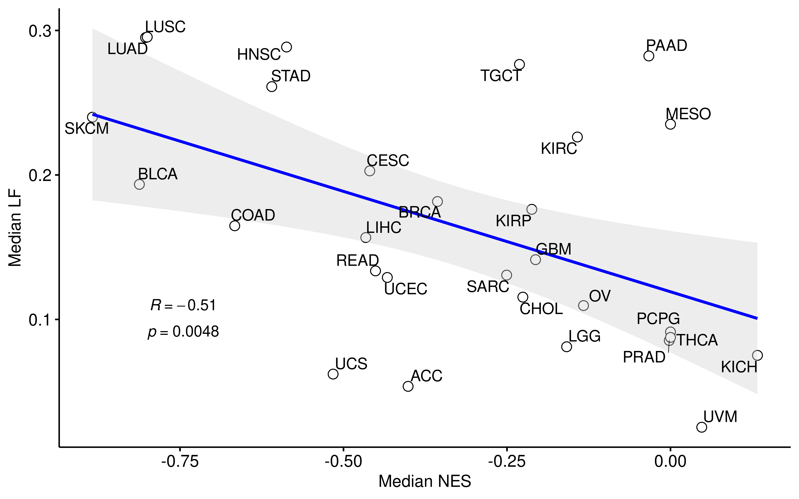
plot_scatter(data = summ_exp %>% mutate(cancer=gsub("TCGA-","",cancer)),
x="nes",y="Leukocyte Fraction",label.x = -0.7,label.y = 0.1)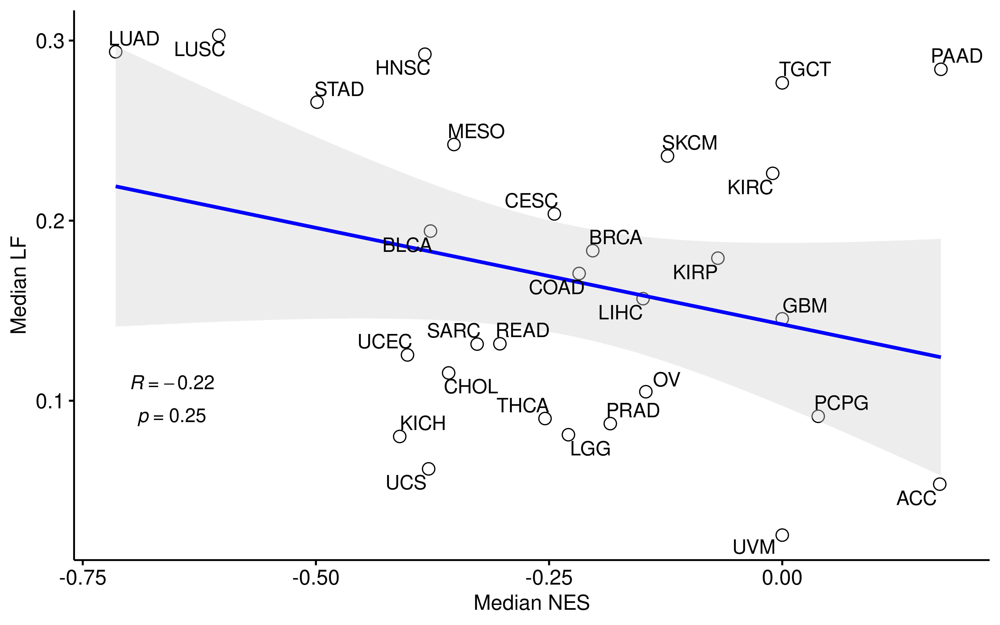
We can see the CCF NES is significantly corrlated with LF, while EXP NES is not.
The negative NES value indicates that samples are under immune negative selection, thus we then consider NES as categorical variable and check the difference between positive and negative NES.
plot_diff_box <- function(data,var,title,laby){
ggplot(data, aes(x=type, y=get(var), fill=type)) +
scale_fill_manual(values=c("white", "#FC8D62"))+
stat_compare_means()+
geom_violin(width=0.8, alpha=0.2)+
geom_boxplot(width=0.2) +
theme(axis.title.x=element_blank())+
guides(fill=F)+
labs(title=title,y=laby)
}
pancancer_nes_ccf <- pancancer_nes_ccf %>%
mutate(type=ifelse(nes<0,"negative","positive"))
pancancer_nes_exp <- pancancer_nes_exp %>%
mutate(type=ifelse(nes<0,"negative","positive"))
pancancer_nes_ccf$type <- factor(pancancer_nes_ccf$type,levels = c("positive","negative"))
pancancer_nes_exp$type <- factor(pancancer_nes_exp$type,levels = c("positive","negative"))
###LF
plot_diff_box(data = pancancer_nes_ccf,var = "Leukocyte Fraction",title = "CCF",
laby = "Leukocyte Fraction")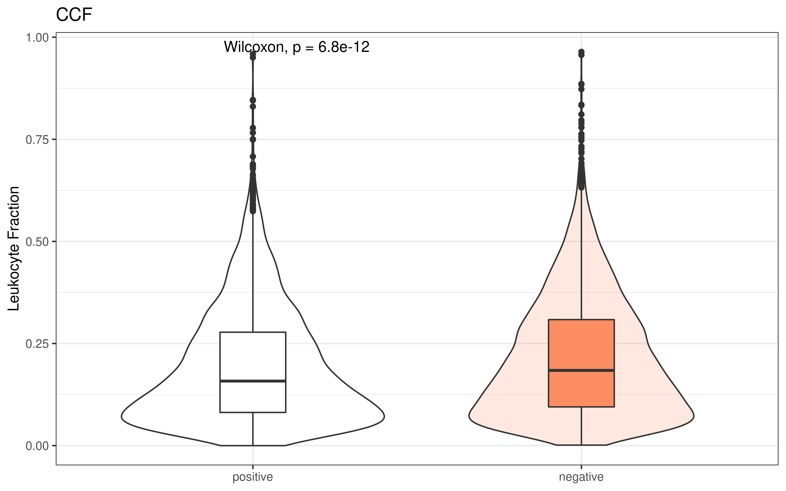
plot_diff_box(data = pancancer_nes_exp,var = "Leukocyte Fraction",title = "EXP",
laby = "Leukocyte Fraction")
###T_cells_CD8
plot_diff_box(data = pancancer_nes_ccf,var = "T_cells_CD8",title = "CCF",
laby = "CD8 T Cells")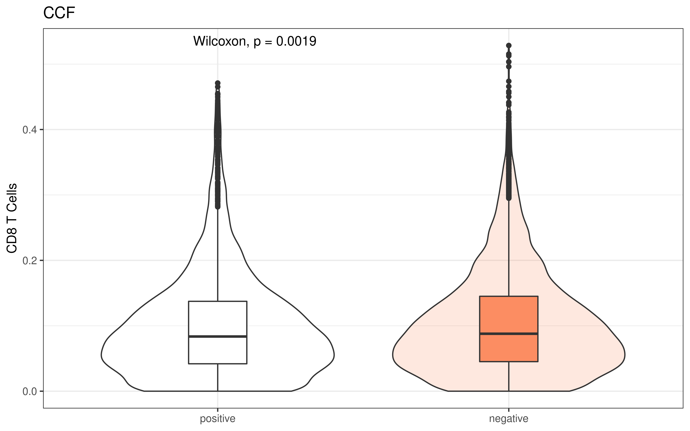
###CYT
ggplot(pancancer_nes_ccf, aes(x=type, y=log(cyt+1), fill=type)) +
scale_fill_manual(values=c("white", "#FC8D62"))+
stat_compare_means()+
geom_violin(width=0.8, alpha=0.2)+
geom_boxplot(width=0.2) +
theme(axis.title.x=element_blank())+
guides(fill=F)+
labs(title="CCF",y="log(CYT+1)")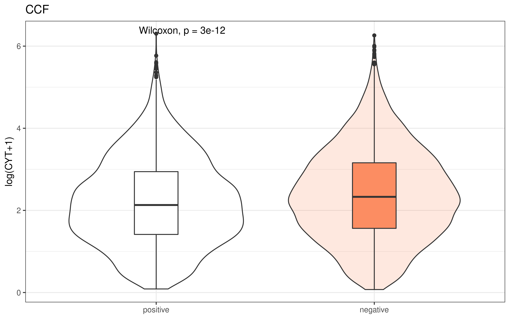
ggplot(pancancer_nes_exp, aes(x=type, y=log(cyt+1), fill=type)) +
scale_fill_manual(values=c("white", "#FC8D62"))+
stat_compare_means()+
geom_violin(width=0.8, alpha=0.2)+
geom_boxplot(width=0.2) +
theme(axis.title.x=element_blank())+
guides(fill=F)+
labs(title="EXP",y="log(CYT+1)")In the categorical aspect, negative and positive show significant difference in those immune scores.
Neoantigen enrichment score and immune negative selection
We use a stochastic branching process model (2020 Nature genetics, Eszter Lakatos et.al) to model tumor growth integrating neoantigen-mediated negative selection. The detailed method please see our paper or the origin NG paper
The Julia scripts used in this simulation can be found in code/julia.
The R scripts used to calculate NES of simulation data can be found in code/R/cal_simulate_es.R
We can check the relationship between selection coefficient with NES:
###bind all data
dt <- vector("list",51)
for (i in 1:51){
df <- readRDS(paste("~/neo_dep/ssNEA/data/publish/simulation_tumor_growth/s_01_05/",file[i],sep = ""))
df$selection_strength <- (i-1)*(-0.01)
df$fdr <- p.adjust(df$p,method = "fdr")
dt[[i]] <- df
}
all_s <- bind_rows(dt)
all_s <- all_s %>%
mutate(`Selection strength`=as.character(selection_strength))
all_s$`Selection strength` <- factor(all_s$`Selection strength`,levels = unique(all_s$`Selection strength`))
all_s <- all_s %>%
filter(selection_strength >=(-0.25))
saveRDS(all_s,file = "~/Immunoediting/data/all_s.rds")Plot
all_s <- readRDS("~/Immunoediting/data/all_s.rds")
ggplot(data=all_s,aes(x=`Selection strength`,y=nes))+
geom_violin(mapping =aes(x=`Selection strength`,y=nes,fill=`Selection strength`))+
stat_summary(fun=median, geom="point", size=1, color="#F9E91E")+
theme_classic()+
guides(fill=F)+
theme(axis.text.x = element_text(angle = 45, vjust = 1, hjust = 1))For each fixed selection coefficient, the normalized neoantigen enrichment score was calculated, and the resulting the resulting neoantigen enrichment score show near linear correlation with s values. This analysis suggests neoantigen enrichment score can be used to infer the immune selection strength in patient.
TCGA Pancancer survial analysis
The enrichment score for CCF distribution reflect the status of immune-elimination step. In cancer patient with strong immune-elimination, good prognosis should be expected. Thus we devided patients into two groups based on NES values, and compare their survial probability.
library(survival)
library(survminer)
###ccf
pancancer_ccf <- readRDS("~/Immunoediting/data/pancancer_nes_ccf.rds") %>%
mutate(p_adj=p.adjust(p_value,method = "fdr")) %>%
mutate(es_type=case_when(
nes < 0 & p_adj < 0.25 ~ "sig_negative",
nes < 0 & p_adj >= 0.25 ~ "negative but not sig",
nes >= 0 ~ "positive"
))
pancancer_survial <- readRDS("~/Immunoediting/data/pancancer_survial.rds")
pancancer_ccf <- left_join(pancancer_ccf %>%
mutate(sample=substr(sample,1,12)),
pancancer_survial,by="sample") %>% filter(OS.time<5000)
##plot
fit0 <- survfit(Surv(OS.time,OS)~es_type,data = pancancer_ccf %>% filter(es_type!="negative but not sig"))
p1 <- ggsurvplot(fit0,pval = T,risk.table = T,data = pancancer_ccf %>% filter(es_type!="negative but not sig"),
tables.theme = theme_cleantable(), # Clean risk table
palette =c( "black","red"),
size=2,title="CCF")#> Warning: Vectorized input to `element_text()` is not officially supported.
#> Results may be unexpected or may change in future versions of ggplot2.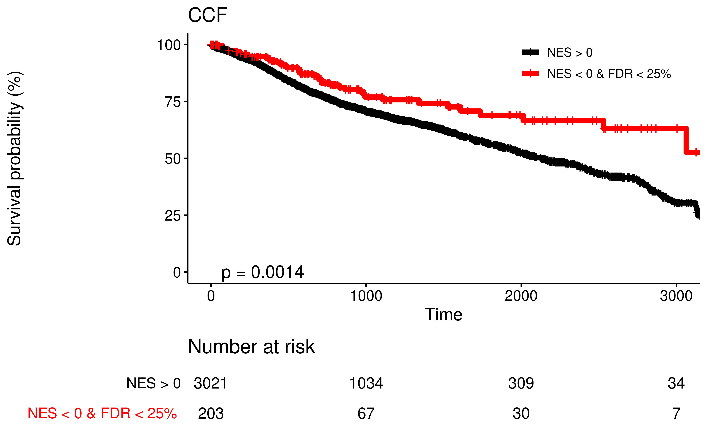
###exp
pancancer_exp <- readRDS("~/Immunoediting/data/pancancer_nes_exp.rds") %>%
mutate(p_adj=p.adjust(p_value,method = "fdr")) %>%
mutate(es_type=case_when(
nes < 0 & p_adj < 0.25 ~ "sig_negative",
nes < 0 & p_adj >= 0.25 ~ "negative but not sig",
nes >= 0 ~ "positive"
))
pancancer_exp <- left_join(pancancer_exp %>%
mutate(sample=substr(sample,1,12)),
pancancer_survial,by="sample") %>% filter(OS.time<5000)
##plot
fit1 <- survfit(Surv(OS.time,OS)~es_type,data = pancancer_exp %>% filter(es_type!="negative but not sig"))
p2 <- ggsurvplot(fit1,pval = T,risk.table = T,data = pancancer_exp %>% filter(es_type!="negative but not sig"),
tables.theme = theme_cleantable(), # Clean risk table
palette =c( "black","red"),
size=2,title="EXP")#> Warning: Vectorized input to `element_text()` is not officially supported.
#> Results may be unexpected or may change in future versions of ggplot2.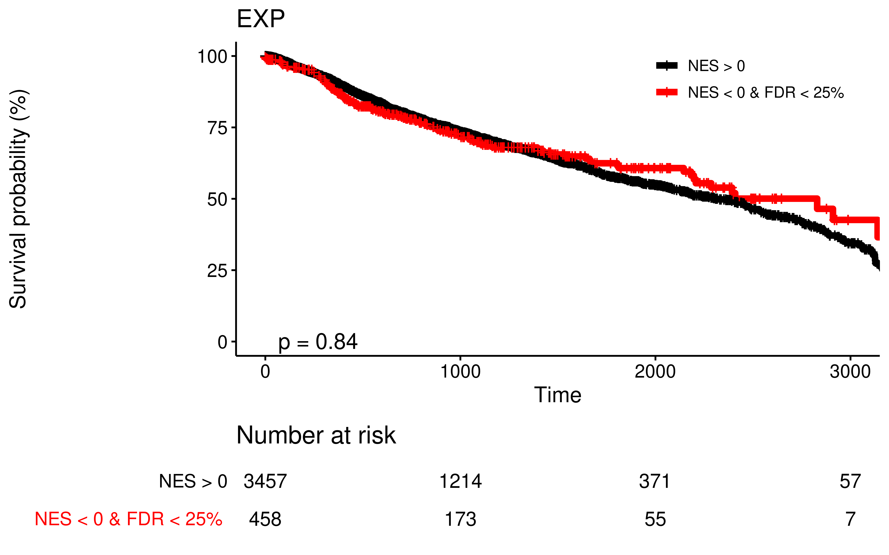 We can see patients with ESccf values (NES<0; FDR<0.25) show improved prognosis compared to remain patients, while expression not.
The patients with NES<0 and FDR<0.25 is small cohort (209 patients), so we could ask this difference is actually caused by NES(ccf) difference or by cancer type difference? (ie. those 209 patients are mainly several cancertype, and those cancer type has better survial than others). Then we do cox multivariate analysis that take cancer type and immune infiltration into account:
library(ezcox)
immue_estimate <- readRDS("~/Immunoediting/data/immue_estimate.rds")
pancancer_ccf$`cancer type` <- getcancer_type(pancancer_ccf$sample)
pancancer_ccf <- left_join(pancancer_ccf,
immue_estimate %>% mutate(sample=substr(sample,1,12)),
by="sample") %>% distinct(sample,.keep_all = T)
show_forest(pancancer_ccf,covariates = c("nes"),controls = c("cancer type","T_cells_CD8"),
time = "OS.time",status = "OS",vars_to_show="nes",point_size = 8)###consider only sig-negative+positive
pancancer_ccf1 <- pancancer_ccf %>% filter(es_type!="negative but not sig")
show_forest(pancancer_ccf1,covariates = c("nes"),controls = c("cancer type","T_cells_CD8"),
time = "OS.time",status = "OS",vars_to_show="nes",point_size = 8)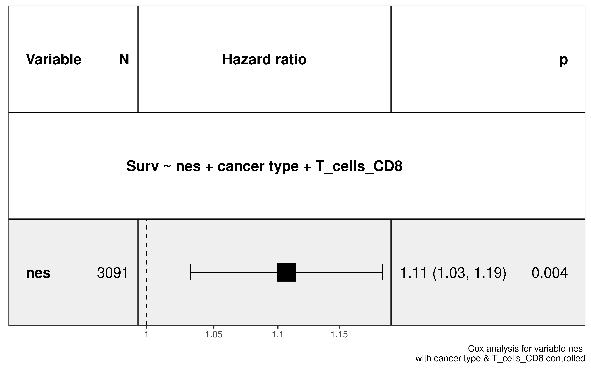 So, when we consider cancer type and immune infiltration, the HR is still more than 1 significantly.
In the Neoantigen ebrichment score is associated with immune cell infiltration part, we show that NES(ccf) is corrlated with some immune scores. So we want to explore whether prognosis is different between immune hot and cold tumors or not.
We foucs on CD8 T cells. Let’s look at the distribution of CD8 T cells between cancer types:
immue_estimate$cancer <- gsub("TCGA-","",getcancer_type(immue_estimate$sample))
immue_estimate %>%
group_by(cancer) %>%
summarise(median_immune=median(T_cells_CD8)) %>%
arrange(median_immune) -> immune_pancancer#> `summarise()` ungrouping output (override with `.groups` argument)immue_estimate$cancer <- factor(immue_estimate$cancer,levels = immune_pancancer$cancer)
ggplot(data = immue_estimate,mapping = aes(x=cancer,y=T_cells_CD8,fill=cancer))+
geom_boxplot()+
theme_classic()+
theme(axis.text.x = element_text(angle = 45,vjust = 1, hjust = 1))+
theme(axis.title.x=element_blank())+
guides(fill=F)+
scale_color_distiller(palette = "Set3")+
labs(y="CD8 cells")hot_cancer <- immune_pancancer$cancer[18:33]
cold_cancer <- immune_pancancer$cancer[1:16]
dt <- data.frame(hot_cancer=hot_cancer,cold_cancer=cold_cancer)
DT::datatable(dt,
options = list(scrollX = TRUE, keys = TRUE), rownames = FALSE
)Then we do survial analysis for hot tumor and cold tumor.
###ccf
hot <- pancancer_ccf %>% filter(gsub("TCGA-","",`cancer type`) %in% hot_cancer)
fit2 <- survfit(Surv(OS.time,OS)~es_type,data = hot %>% filter(es_type!="negative but not sig"))
p3 <- ggsurvplot(fit2,pval = T,risk.table = T,data = hot %>% filter(es_type!="negative but not sig"),
tables.theme = theme_cleantable(), # Clean risk table
palette =c( "black","red"),
size=2,title="CCF hot")
cold <- pancancer_ccf %>% filter(gsub("TCGA-","",`cancer type`) %in% cold_cancer)
fit3 <- survfit(Surv(OS.time,OS)~es_type,data = cold %>% filter(es_type!="negative but not sig"))
p4 <- ggsurvplot(fit3,pval = T,risk.table = T,data = cold %>% filter(es_type!="negative but not sig"),
tables.theme = theme_cleantable(), # Clean risk table
palette =c( "black","red"),
size=2,title="CCF cold")
p3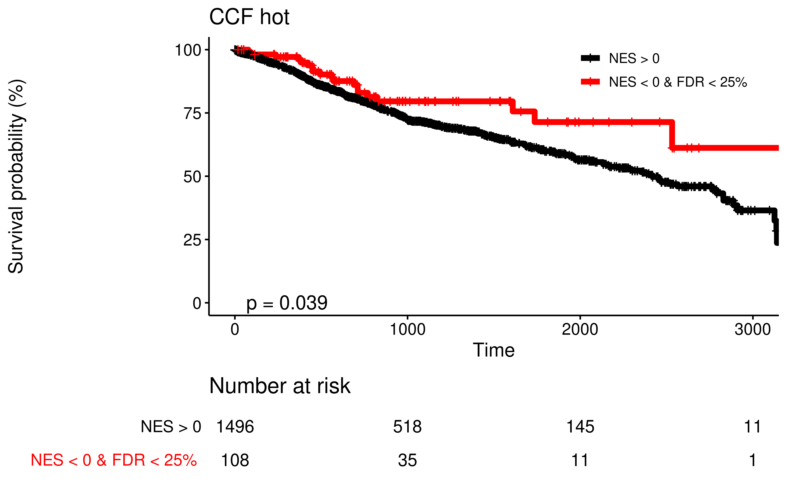
###exp
pancancer_exp$cancer <- gsub("TCGA-","",getcancer_type(pancancer_exp$sample))
hot1 <- pancancer_exp %>% filter(cancer %in% hot_cancer)
fit4 <- survfit(Surv(OS.time,OS)~es_type,data = hot1 %>% filter(es_type!="negative but not sig"))
p5 <- ggsurvplot(fit4,pval = T,risk.table = T,data = hot1 %>% filter(es_type!="negative but not sig"),
tables.theme = theme_cleantable(), # Clean risk table
palette =c( "black","red"),
size=2,title="EXP hot")
cold1 <- pancancer_exp %>% filter(cancer %in% cold_cancer)
fit5 <- survfit(Surv(OS.time,OS)~es_type,data = cold1 %>% filter(es_type!="negative but not sig"))
p6 <- ggsurvplot(fit5,pval = T,risk.table = T,data = cold1 %>% filter(es_type!="negative but not sig"),
tables.theme = theme_cleantable(), # Clean risk table
palette =c( "black","red"),
size=2,title="EXP cold")
p5
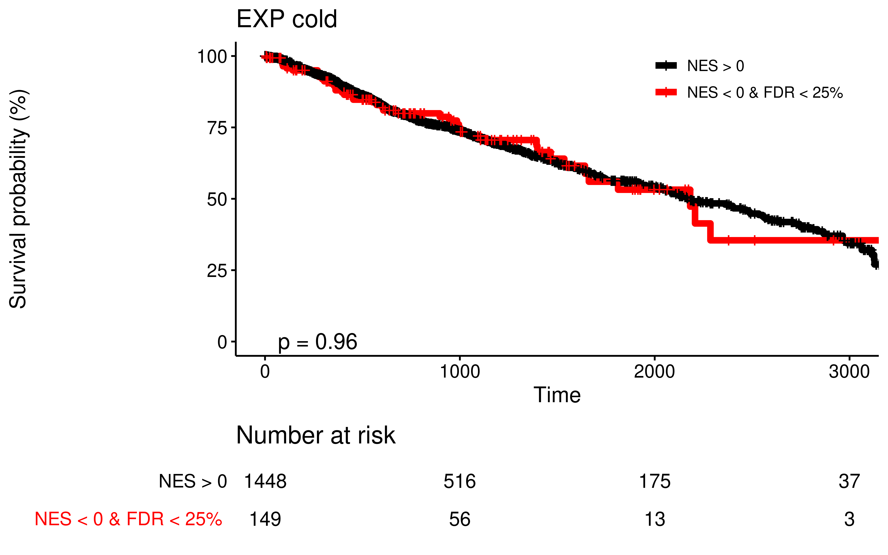 This analysis show that both hot and cold cancer has significantly different prognosis, while both of exp shows no difference. This is because the enrichment score for mRNA expression distribution partially reflect the status of immune-escape, thus we explore other escape mechanisms, including:
- Suppress the transcription/expression of genome alterations encoding high antigenicity (quantified by NES(EXP))
- Antigen presentation pathway gene mutation
- Up-regulate the expression of immune suppressive signaling, like PD-L1, CTLA-4
In the Process immune escape sample part, we has already find escape samples. Then we can look at the prognosis of escape samples VS no escape samples:
pancancer_exp <- readRDS("~/Immunoediting/data/pancancer_nes_exp.rds") %>%
mutate(p_adj=p.adjust(p_value,method = "fdr")) %>%
mutate(es_type=case_when(
nes < 0 & p_adj < 0.25 ~ "sig_negative",
nes < 0 & p_adj >= 0.25 ~ "negative but not sig",
nes >= 0 ~ "positive"
))
pancancer_exp <- left_join(pancancer_exp %>%
mutate(sample=substr(sample,1,12)),
pancancer_survial,by="sample") %>%
filter(OS.time<4700)
pancancer_exp <- pancancer_exp %>% filter(!(is.na(apm_mut)
| is.na(exp_escape)
| is.na(checkpoint_overexpression)))
pancancer_exp$escape <- mapply(function(x,y,z)
{ifelse(any(c(x,y,z)=="yes",na.rm = T),"yes","no")},
pancancer_exp$apm_mut,
pancancer_exp$checkpoint_overexpression,
pancancer_exp$exp_escape)
pancancer_exp$cancer <- gsub("TCGA-","",getcancer_type(pancancer_exp$sample))
fit6 <- survfit(Surv(OS.time,OS)~escape,data = pancancer_exp)
p7 <- ggsurvplot(fit6,pval = T,risk.table = T,data = pancancer_exp,
tables.theme = theme_cleantable(), # Clean risk table
palette =c("black","red"),
size=2,title="Escape of all samples")#> Warning: Vectorized input to `element_text()` is not officially supported.
#> Results may be unexpected or may change in future versions of ggplot2.hot <- pancancer_exp %>% filter(cancer %in% hot_cancer)
fit7 <- survfit(Surv(OS.time,OS)~escape,data = hot)
p8 <- ggsurvplot(fit7,pval = T,risk.table = T,data = hot,
tables.theme = theme_cleantable(), # Clean risk table
palette =c("black","red"),
size=2,title="Escape of hot cancers")#> Warning: Vectorized input to `element_text()` is not officially supported.
#> Results may be unexpected or may change in future versions of ggplot2.cold <- pancancer_exp %>% filter(cancer %in% cold_cancer)
fit8 <- survfit(Surv(OS.time,OS)~escape,data = cold)
p9 <- ggsurvplot(fit8,pval = T,risk.table = T,data = cold,
tables.theme = theme_cleantable(), # Clean risk table
palette =c("black","red"),
size=2,title="Escape of cold cancers")#> Warning: Vectorized input to `element_text()` is not officially supported.
#> Results may be unexpected or may change in future versions of ggplot2.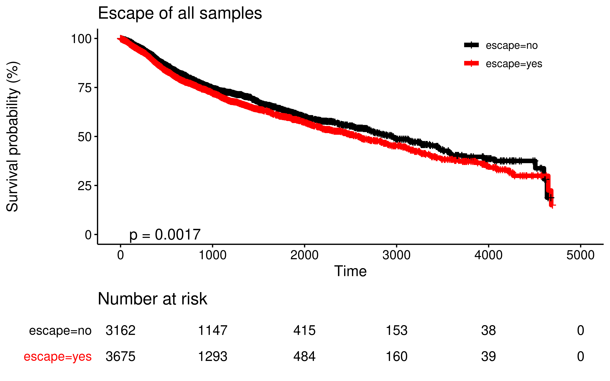
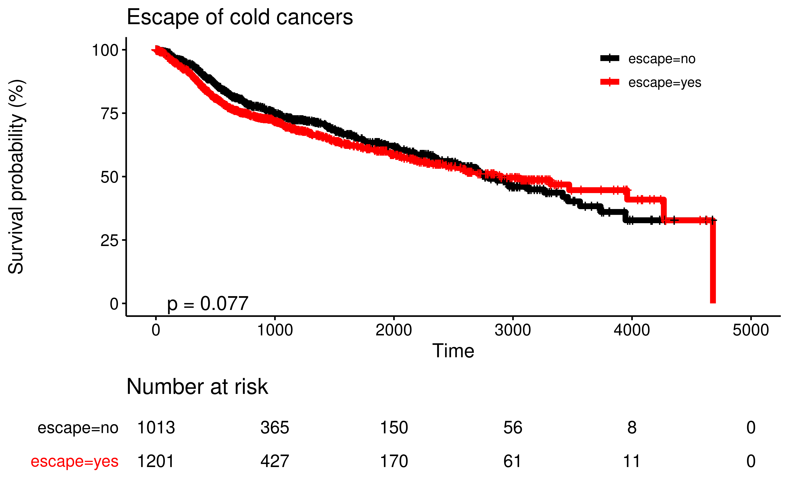
We can see, in the hot cancers, no escape samples have a better prognosis while in the cold cancers, there are no difference.